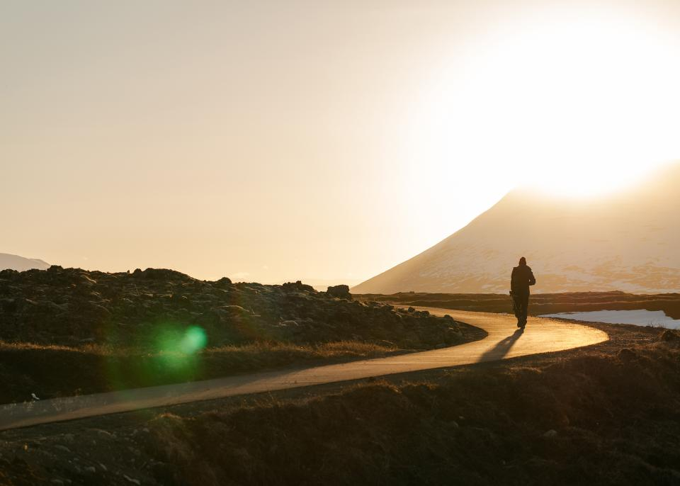
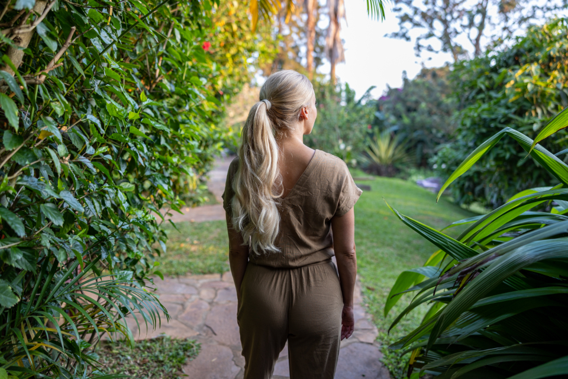
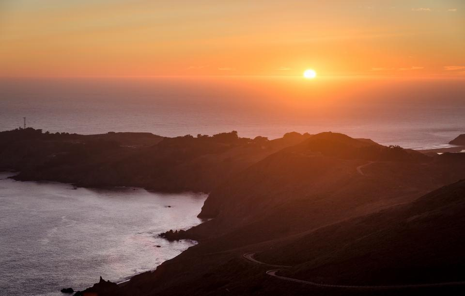
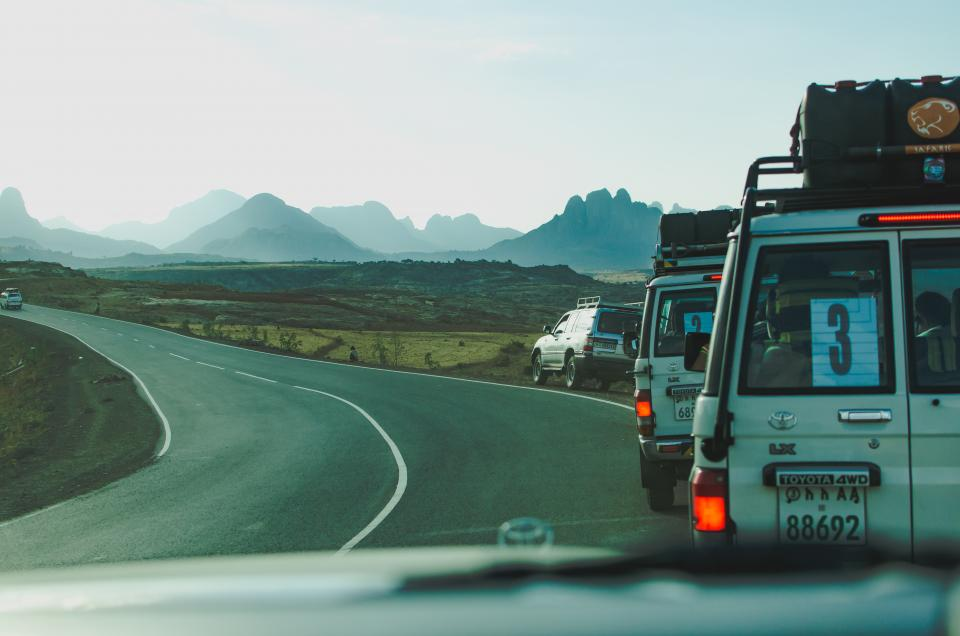

The long road north
Rain, switchbacks and three days beyond the last reliable signal.
28 AUG 2026 / 12 MIN ↗Stories from roads that climb, coastlines that disappear, and the people who read the weather.
Rain, switchbacks and three days beyond the last reliable signal.
28 AUG 2026 / 12 MIN ↗


A sequence from the eastern face of the range.
19 JUL 2026 / 18 FRAMES ↗